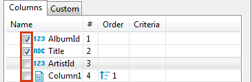
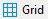
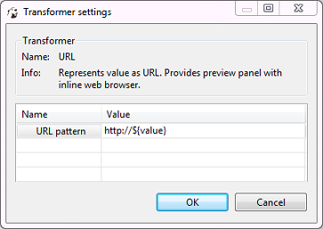

The main tool for managing the appearance of the data table is the Result Set Order/Filter Settings window.

To open this window, click the Custom Filters button ( in the top toolbar of the editor or click the Configure button (
in the top toolbar of the editor or click the Configure button ( ) and then click Order/Filter on the dropdown menu.
) and then click Order/Filter on the dropdown menu.
The Result Set Order/Filter Settingswindow provides tools to: * Order data inside columns * Manage the display of columns in the table * Manage the order of columns in the table * Filter data in the table using an SQL expression, see … below
Another tool for managing data appearance are column headers. In the data table, every column header contains three elements each having its own function: Data (column) type icon, column name, filter icon, and ordering icon.

- Simply clicking the column name or column type icon highlights the whole column.
- You can click the column type icon and then drag and drop the column to a different position in the table.
- You can click the column name and then drag the cursor right or left to highlight multiple columns.
- Clicking the ordering icon allows ordering the data in the column in ascending or descending order - see 'Ordering Data in Columns' section further in this article
- Clicking the filter icon allows filtering the data by a cell value, see [TBA]
Ordering Data in Columns
You can order data in columns in one of the ways:
1. Click the ordering icon ( ) in the header of the column.
) in the header of the column.
The icon has three states:
* Clicking once establishes ascending order ( )
* Clicking a second time changes the order to descending (
)
* Clicking a second time changes the order to descending ( )
)
* Clicking a third time removes the ordering from the column ()
To order data by several columns, go column by column, setting the order with the Ordering icon, starting from the column by which you want to order data first.
- Click the Custom Filters button (
 ) in the top toolbar of the editor to open the Result Set Order/Filter Settings window (see above):
) in the top toolbar of the editor to open the Result Set Order/Filter Settings window (see above):
a) Next to the column by which you want to order data in the first turn, set the ascending or descending order using the same three-state principle as described above.
b) Set the ordering in other columns by which you want to sort data in the second, third, etc. turn. The Order column indicates the order in which the sorting will happen.
NOTE: The number (#) column indicates the initial order of columns.
c) To easily move the ordering setting from column to column, you can use the Move up/down/to top/to bottom/ buttons:
To reset the data ordering to its initial state, click the Reset button () in the same window.
Also, to remove all ordering settings, click the Remove All Filters/Orderings button ( ) in the top toolbar of the Data Editor.
) in the top toolbar of the Data Editor.
Managing Display of Columns in Data Table
To hide a single column, right-click the column or any cell in it and click View/Format -> Hide column on the context menu. To unhide a hidden column, open the Result Set Order/Filter Settings window (see the image at the beginning of in this article) and select the checkbox next to the column name or click the Reset button ().
To display or hide columns in the data table, in the Result Set Order/Filter Settings window: 1. Select the checkboxes next to the columns that you want to see in the table and clear the checkboxes next to those that you want to hide.

- Use the Show All (
 and Show None (
and Show None ( ) buttons at the bottom of the window.
) buttons at the bottom of the window.
Sorting Columns in Data Table
You can modify the order of columns in the data table in two ways:
1. Click the icon in the column header and drag-and-drop the column to a new position.
2. To sort column alphabetically, in the Result Set Order/Filter Settings window (open by clicking the Custom Filters button ( in the top toolbar of the editor), click the Sort button ( )
3. In the Result Set Order/Filter Settings window, click the column to set focus to it and then move it using the navigation buttons: ()
)
3. In the Result Set Order/Filter Settings window, click the column to set focus to it and then move it using the navigation buttons: ()
Grid vs. Plain Text Views
You can switch between two data presentations in SE version and four presentations in EE version. Pressing CTRL+~ switches available presentations in turn.
* To see data in a grid view, similar to Excel spreadsheet, click the Grid button () in the bottom toolbar of the editor.
* To switch to the plain text view, click Text ( ) in the bottom toolbar.
* To switch to JSON view (available in EE version only for MongoDB documents and JSON tables), click JSON in the toolbar.
* To switch to XML view (available in EE version only for XML tables), click XML in the toolbar.
) in the bottom toolbar.
* To switch to JSON view (available in EE version only for MongoDB documents and JSON tables), click JSON in the toolbar.
* To switch to XML view (available in EE version only for XML tables), click XML in the toolbar.
Table vs. Record Views
The table view is a standard table (Excel-like) in which columns are vertical and rows are horizontal. This view is the default one. If you click the Record button in the bottom toolbar of the editor ( ), or press Tab, or right-click a cell and then click Layout -> Record on the context menu, the rows and columns switch positions – columns appear as rows, and rows hide in one Value column which now shows only one row of data, and column headers shift from the top of the table to its left side:
), or press Tab, or right-click a cell and then click Layout -> Record on the context menu, the rows and columns switch positions – columns appear as rows, and rows hide in one Value column which now shows only one row of data, and column headers shift from the top of the table to its left side:

The Record view is useful if the table contains a big number of columns. To navigate from row to row of data, use the navigation buttons in the bottom toolbar of the editor:
To return back to the standard table view, click the Record button again.
Rows Coloring
In the data editor, you can color all rows that have the same value as a particular cell of a certain column. To do so, right-click the cell and click View/Format -> Color by {column name} on the context menu:
Then choose the color in the palette window that appears and click OK. The current row and all other rows that contain the same value change their color to the one you selected:

To remove the coloring by a particular column, right-click the cell again and click View/Format -> Reset color by [column name] on the context menu. To remove coloring from all rows, right-click anywhere in the table and, on the context menu, click View/Format -> Reset all colors.
Coloring by Data Types
Besides coloring rows by a value, you can colorize values in columns by data types. To do so, right-click any cell in the table and, on the context menu, click View/Format -> Colorize Data Types. Values in cells are colored in different colors according to preferences currently set:

You can change the color preferences in the Preferences window: click Window -> Preferences on the main menu. Then, in the window, in the navigation pane on the left, expand General and then Appearance, and then click Colors and Fonts:
To remove coloring by data types, on the context menu, click View/Format -> Colorize Data Types again.
Transforming Data Presentation
For string and numeric data types, DBeaver provides tools to transform the data presentation into a number of formats, such as URL and Binary for strings and Epoch Time, Number Radix, etc. for numbers. To change the data presentation in a certain column, right-click a cell in the column, then, on the context menu, click View/Format -> View as and then click the presentation type name:
The Transformer settings window opens showing the value in the chosen format. Click OK to apply the change:

The values in the column appear in the new format.
NOTE: For URL format, the resulting cell provides a link to the URL in a browser window.
To roll back the changes to the default format, right-click any cell in the column, and on the context menu, click View/Format -> View as -> Default.
Structurizing Complex Data Types
For complex data types (that themselves represent a structure), such as objects, structures and arrays, DBeaver provides a tool for breaking them into columns:
To do so, right-click a cell in the column and, on the context menu, click View/Format -> Structurize complex types.
Configuring Numeric and Time Data Formats
You can specify the exact format of Time, Timestamp, Date, and Number data used in the currently open database or globally. To specify a format, right-click any cell in the table and, on the context menu, click View/Format -> Data formats. The Properties window opens displaying the Data Formats page:
To configure the format for the current database only, select the Datasource "[Connection name]" settings checkbox. To configure the settings globally, to all databases that you have in DBeaver, click Global settings.
You can specify the locale for the data format in the Locale area, then, in the Type dropdown list, click the name of the data type and then, in the Settings table, click the required format.
To apply the changes and make them visible in the table, click Apply and Close and then refresh the window (F5).